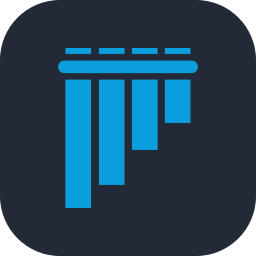

Gear Sync API
Sincroniza um sistema de controle de acesso com PostgreSQL e expõe tudo numa API REST.
- API GEARorigem
- Cliente HTTPespera em 429
- SyncUPSERT idempotente
- PostgreSQLAlembic
- FastAPIREST + Swagger
- 61 testes
- 97% de cobertura
- CI com PostgreSQL 16
- Docker compose
Python
FastAPI
- SQLAlchemy
PostgreSQL

pytestDocker
Actions